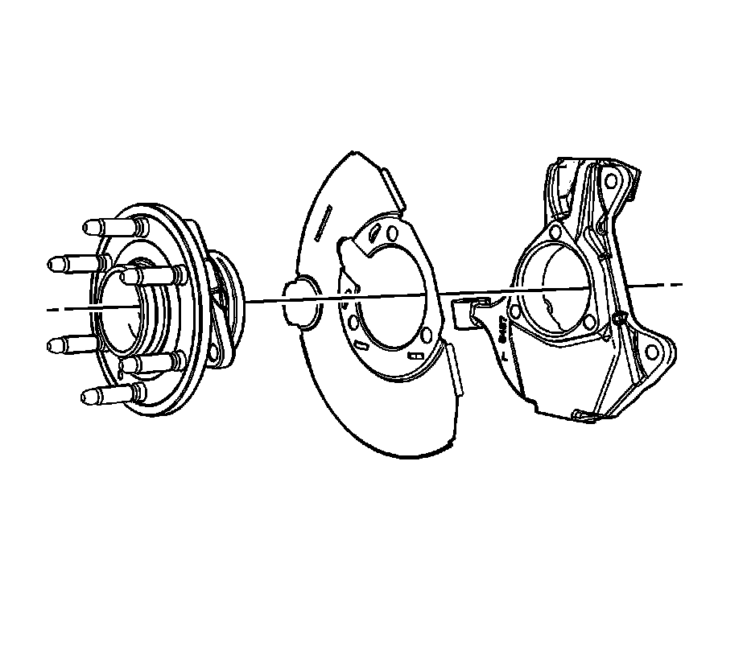

Front Brake Shield Replacement (1500 Series)
Front Brake Shield Replacement (1500 Series)
Caution: Refer to Brake Dust Caution.
Removal Procedure

1. Remove the wheel hub and bearing assembly.
Important: Note the orientation of the disc brake splash shield for proper assembly.
2. Remove the splash shield from the steering knuckle.
Installation Procedure
Important: Align the relief in the forward edge of the disc brake splash shield with the steering arm on the steering knuckle.
1. Install the splash shield to the steering knuckle.
2. Install the wheel hub and bearing assembly.